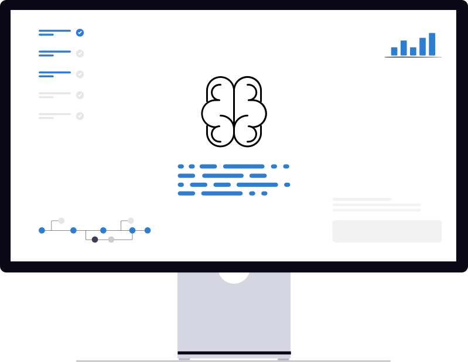

AI
AI products embedded in HCM products, from admin-facing assistants to agentic hiring workflows.
AI / LLM Products
Design Thinking
User Research
B2B SaaS
- Hiring re-engagement agent — delivered a hiring re-engagement agent that surfaced dormant candidates, helping recruiters reduce time to first screen.
- HR assistant — designed, tested, and launched an assistant for HR admins that strengthened data compliance and task efficiency
- ATS workflow automation — reduced hiring task time through several AI features such as resume snapshots and job description authoring.